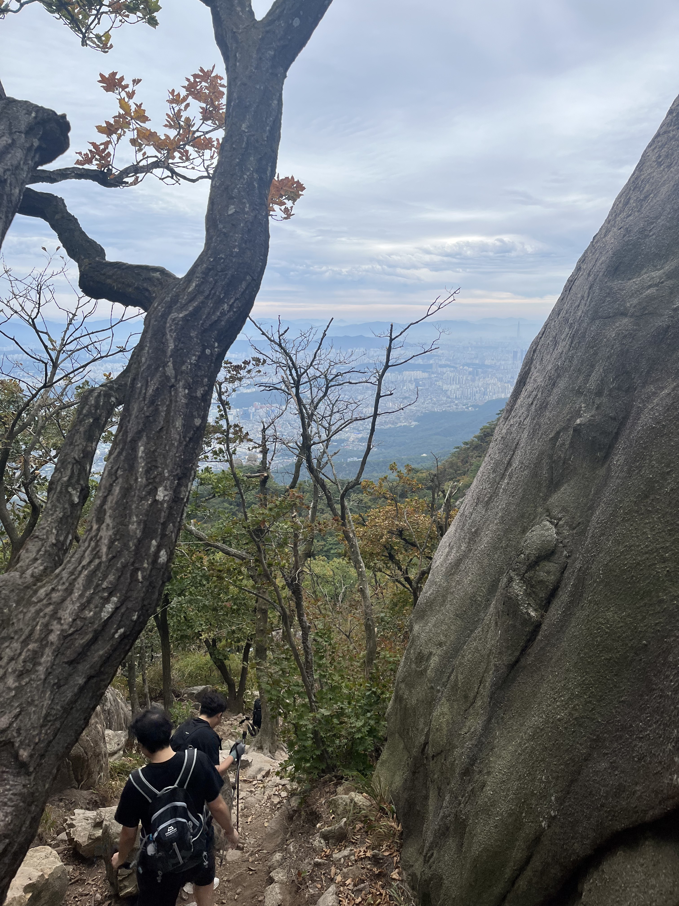
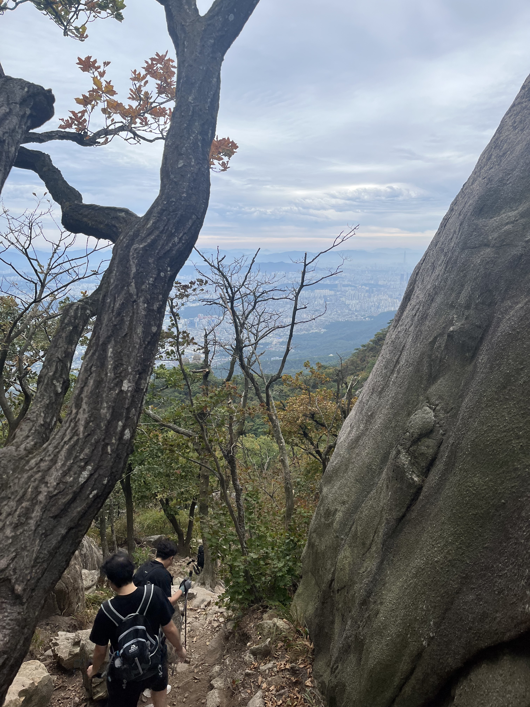

Min Hak Jeon
My objective is to develop and apply AI-driven models for predictive analytics, anomaly detection, and resource modeling within data-driven water systems and hydroclimate contexts.
My objective is to develop and apply AI-driven models for predictive analytics, anomaly detection, and resource modeling within data-driven water systems and hydroclimate contexts.
I am a highly motivated Civil & Environmental Engineering student specializing in data-driven solutions for water resource management. My ultimate goal is to become a professor and researcher dedicated to tackling the complex challenges of urban water systems and hydroclimate interactions through advanced computational science. I am particularly passionate about bridging the gap between traditional hydraulic engineering and cutting-edge predictive analytics to build more resilient and sustainable water infrastructure.
My hands-on experience as a project manager in water distribution system maintenance provided a unique ground-level perspective. Analyzing real-time field data (pressure, flow, quality) to detect anomalies taught me the critical importance of accurate system monitoring and the immense potential for AI/ML-based prediction and control to move beyond reactive problem-solving. This field experience is the core driver of my desire to pursue graduate-level research focused on predictive analytics, anomaly detection, and water resource modeling.
To build the necessary computational skills for this goal, I have proactively completed foundational courses, including 'Python for Data Analysis' (Kookmin Univ) and 'Google AI Essentials' & 'Prompting Essentials' (Coursera). I am eager to join a research lab where I can apply my practical understanding of water distribution systems and my growing analytical capabilities to develop innovative, data-driven solutions for smart water infrastructure and climate resilience.
Cumulative GPA: 4.33 / 4.5 | Major GPA: 4.36 / 4.5
Cumulative GPA: 4.34 / 4.5 | Major GPA: 4.35 / 4.5
I believe that a healthy body and a resilient mind are crucial for long-term, intensive research. In my free time, I enjoy activities that challenge me both physically and mentally.
 
